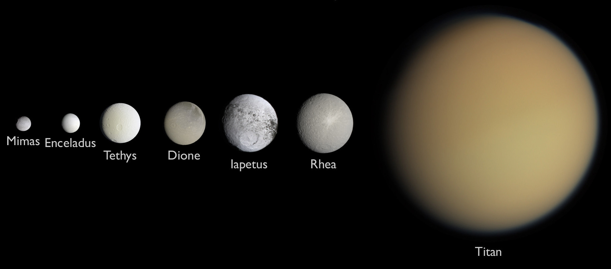
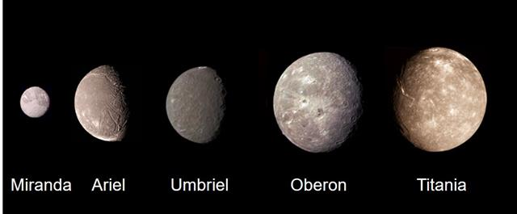
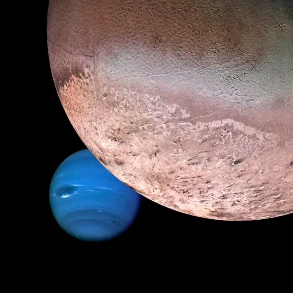
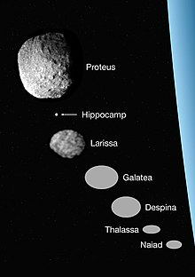

Gas Giants Among Us
Jupiter
Saturn
Uranus
Neptune
The four gas giants among our solar system are rested past the asteroid belt. Jupter, the closest gas giant to Earth, ranges from 365 million to 601 million miles from Earth!
The four gas giants among our solar system are rested past the asteroid belt. Jupter, the closest gas giant to Earth, ranges from 365 million to 601 million miles from Earth!
Jupiter is the largest planet in our solar system, with a diameter of about 86,881 miles (139,822 kilometers). It is primarily composed of hydrogen and helium gases, and it has a massive and powerful magnetic field.
Jupiter is known for its iconic and massive Great Red Spot, a giant storm that has been raging for at least 400 years. The planet's fast rotation gives it a day that lasts only about 10 hours, making it one of the fastest spinning planets in the solar system.
This planet has a distinct set of rings, although they are much fainter and less prominent than the rings of Saturn. It also has more than 79 known moons, with the four largest, known as the Galilean moons (Io, Europa, Ganymede, and Callisto), being among the largest moons in the solar system.
 The Galilean moons are the four largest moons of Jupiter, discovered by Galileo Galilei in 1610. They are named Io, Europa, Ganymede, and Callisto.
The Galilean moons are the four largest moons of Jupiter, discovered by Galileo Galilei in 1610. They are named Io, Europa, Ganymede, and Callisto.


The Galilean moons have been studied extensively by spacecraft such as the Galileo probe, which provided valuable insights into their composition, geology, and potential for hosting life.

Saturn is the sixth planet from the Sun and the second-largest planet in our solar system, after Jupiter. One of the most iconic features of Saturn is its spectacular system of rings. These rings are made up of billions of icy particles ranging in size from tiny grains to large chunks. The rings are thought to be relatively young compared to the planet itself and are believed to be the remnants of a moon or comet that was shattered by Saturn's gravity.
Like Jupiter, Saturn experiences powerful storms in its atmosphere, including a persistent hexagonal-shaped storm at its north pole. This hexagon is a unique and mysterious feature that has intrigued scientists for decades.
Saturn has been visited by multiple spacecraft, including the Pioneer and Voyager missions in the 1970s and the Cassini mission, which orbited the planet from 2004 to 2017. Cassini's observations revolutionized our understanding of Saturn, its rings, and its moons, providing detailed images and data that continue to be studied by scientists.
Saturn has a total of 82 known moons, making it the planet with the second-highest number of moons in the solar system after Jupiter. Some of the most notable moons of Saturn include:


Uranus is the seventh planet from the Sun and is classified as an ice giant. This planet is predominantly composed of ices and rock, with an atmosphere of hydrogen, helium, and methane. The methane in its atmosphere gives Uranus its blue-green color. Rings were first discovered in 1977 during a stellar occultation and have been further studied by spacecraft like Voyager 2.
Unique in the solar system because this planet rotates on its side, with its axis of rotation tilted almost parallel to its orbit around the Sun. This extreme axial tilt of about 98 degrees contributes to its unusual seasons and atmospheric dynamics.
Uranus has only been visited by one spacecraft so far - Voyager 2, which flew by the planet in 1986. Voyager 2 provided valuable data and images of Uranus and its moons, shedding light on the planet's composition, atmosphere, and magnetic field.
Uranus has 27 known moons, with the five largest ones being Miranda, Ariel, Umbriel, Oberon, and Titania. Miranda, in particular, is known for its varied and complex surface features, including cliffs, valleys, and other geological formations.
The five innermost moons of Uranus are relatively small and have circular orbits close to the planet. They are named Cordelia, Ophelia, Bianca, Cressida, and Desdemona. These moons are thought to be the remnants of a larger moon that was shattered by tidal forces.

Neptune is the eighth and farthest planet from the Sun in our solar system. Neptune is the fourth-largest planet by diameter and the third-most massive planet in our solar system. It is classified as an ice giant, similar to Uranus, and is composed mainly of hydrogen, helium, and ices like water, ammonia, and methane. The presence of methane in Neptune's atmosphere gives it a blue color.
One of the most notable features on Neptune is a massive storm known as the Great Dark Spot. This storm was first observed by the Voyager 2 spacecraft during its flyby of Neptune in 1989. The Great Dark Spot is a large, dark storm system similar to Jupiter's Great Red Spot, but it is located in Neptune's southern hemisphere. The Great Dark Spot is a massive anticyclonic storm, rotating in a counterclockwise direction. It is large enough to engulf the entire Earth within its boundaries. The storm has winds reaching speeds of up to 1,000 miles per hour (1,600 kilometers per hour), making it one of the fastest winds recorded in the solar system. Unfortunately, when the Hubble Space Telescope observed Neptune in the years following Voyager 2's flyby, the Great Dark Spot had disappeared. It is believed that the storm may have been a transient feature that comes and goes on Neptune, similar to other atmospheric disturbances observed on gas giant planets.
Neptune has 14 known moons, with the largest and most notable moon being Triton. Triton is the largest moon of Neptune and the seventh-largest moon in the solar system. It is unique among large moons because it orbits Neptune in a retrograde, or opposite, direction to the planet's rotation. Triton is believed to be a captured Kuiper Belt object and has a thin atmosphere composed mainly of nitrogen. Triton's surface is covered in a mixture of water ice and nitrogen ice, with cryovolcanism and geysers spewing nitrogen gas and dark dust particles into the thin atmosphere. The study of Neptune's moons provides insights into the formation and evolution of the Neptunian system, as well as the dynamics of moon-ring interactions and the processes that shape the moons in the outer solar system.